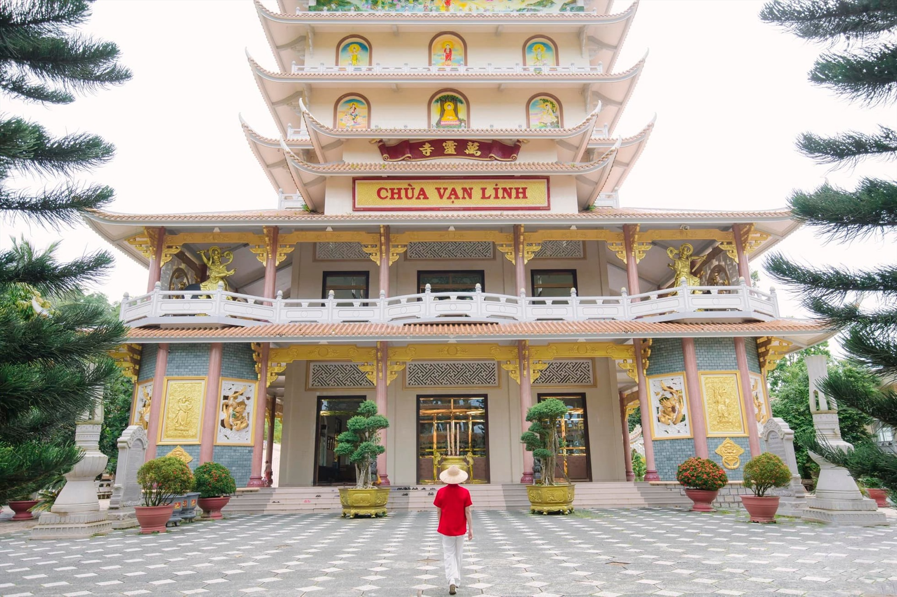
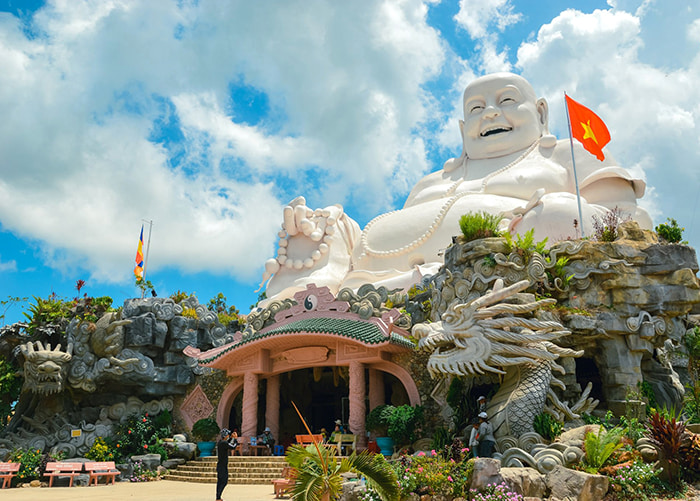
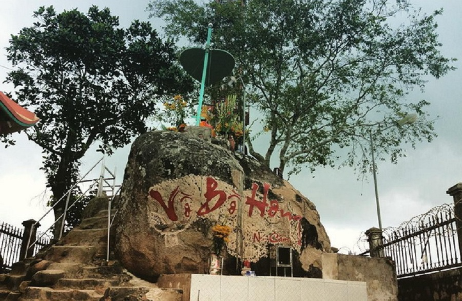
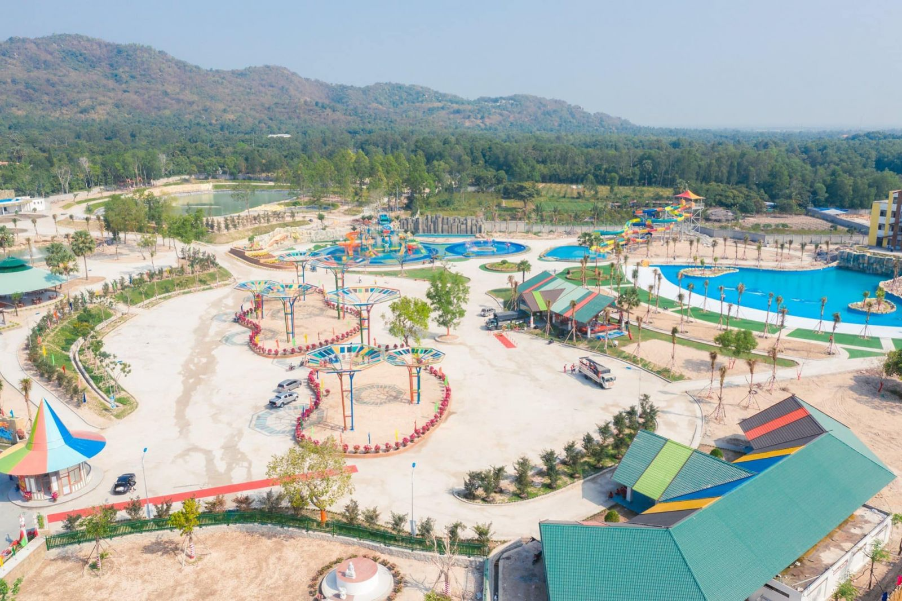

Núi Cấm còn gọi là Thiên Cấm Sơn, nằm ngay trung tâm của vùng Bảy núi chính vì thế núi Cấm có vẻ đẹp hoang sơ, hùng vĩ. Đặc biệt, đỉnh Bồ Hong ở trên núi Cấm chính là đỉnh núi cao nhất trong Thất Sơn và cũng là ngọn núi cao nhất Đồng Bằng Sông Cửu Long. Với khí hậu mát mẻ được ví như một phiên bản “Đà Lạt” của miền Tây, Núi Cấm trở thành điểm tham quan, vui chơi, chiêm bái hấp dẫn bậc nhất trong các điểm du lịch An Giang. Các công trình kiến trúc và điểm tham quan trên Núi Cấm:
Nơi du lịch tiêu biểu
| Địa điểm | Đặc điểm | Hình ảnh |
|---|---|---|
| 1.Chùa Vạn Linh | Chùa Vạn Linh (chùa Lá) được Hòa thượng Thích Thiện Quang khai sơn năm 1927. Chùa được thiết kế, xây mới theo lối kiến trúc cổ truyền phương Đông, nổi bật nhất là ba ngọn tháp uy nghi, trầm mặc, được đặt tại ba vị trí khác nhau ở phía trước tiền đường, đó là: tháp Quan Âm 9 tầng cao hơn 35m (ở chính giữa), tháp Hòa thượng khai sơn Thích Thiện Hạ Quang 3 tầng (ở bên phải) và tháp chuông 9 tầng với quả đại Hồng chung nặng 1,2 tấn (ở bên trái). |  |
| 2.Chùa Phật Lớn | Chùa được xây dựng vào năm 1912. Chùa sở hữu tượng một tượng Phật Di Lặc rất lớn, cao 33.6 mét nên mới được gọi là Chùa Phật Lớn. Tượng phật Di Lặc ở chùa Phật Lớn còn được sách Kỉ Lục Việt Nam ghi nhận là tượng Di Lặc lớn nhất Việt Nam. |  |
| 3.Hồ Thuỷ Liêm | Hồ nước Thủy Liêm nằm ngay trung tâm núi Cấm. Nó tạo nên cảnh quan hữu tình, thơ mộng lãng mạn cho nơi đây. Hồ nước có diện tích hơn 60.000 mét vuông với sức chứa hơn 300.000 mét khối nước. Xung quanh hồ được trồng hoa và bắc cầu tạo cảnh quan tuyệt đẹp. Do nhu cầu tâm linh, hồ Thủy Liêm ngày nay còn trở thành địa điểm thả cá phóng sinh lý tưởng của du khách. | |
| 4.Vồ Bồ Hong | Vồ Bồ Hong (hay điện Bồ Hong) là nơi cao nhất trên đỉnh núi Cấm và trong dãy Thất Sơn. Lên đỉnh Bồ Hong, du khách có thể bao quát và ngắm được toàn cảnh vùng núi Cấm tựa như một tấm lụa đa sắc màu. Trên Vồ này có thờ tượng Ngọc Hoàng, hàng năm có rất đông người đến tham quan và chiêm bái. |  |
| 5.Công viên nước Thanh Long | Nơi đây được xem là công viên nước duy nhất tại Việt Nam nằm ẩn mình trong lòng núi rừng hùng vĩ, vừa mang lại những vẻ đẹp hoang sơ, mộc mạc, vừa mang nổi bật tính giải trí hiện đại. |  |